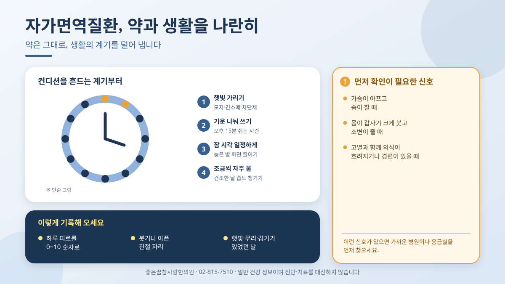

이종호 한의사 감수좋은꿈참사랑한의원 대표원장 (한의사 면허번호 19769)발행 2026-11-26 · 수정 2026-11-26
이 글의 차례
일요일 저녁, 식탁에 일주일치 약통을 펼쳐 놓고 칸마다 알약을 나눠 담습니다. 아침 칸, 저녁 칸, 그리고 가끔 늘었다 줄었다 하는 약까지. 다 담고 나면 괜히 한숨이 나옵니다. '언제까지 이렇게 지내야 할까. 약 말고 내가 할 수 있는 건 정말 없을까.'
진료실에서 자가면역질환을 앓는 분들을 만나면 이 마음을 자주 듣습니다. 겉으로는 멀쩡해 보여서 주변에서는 잘 모르고, 본인은 하루하루 몸의 눈치를 보며 지냅니다. 어제는 괜찮았는데 오늘은 손가락이 붓고, 몸이 물먹은 솜처럼 무겁습니다.
저는 이런 분들께 먼저 이렇게 말씀드립니다. 류마티스내과에서 받는 치료가 중심이고, 한의원은 그 옆에서 생활의 결을 함께 살피는 자리라고요. 약을 바꾸거나 줄이는 일은 하지 않습니다. 대신 잠, 피로, 소화, 건조함처럼 진료 시간이 짧아 미처 다 말하지 못한 불편을 천천히 들어 봅니다.
자가면역질환은 오래 함께 가는 병입니다. 좋을 때와 나쁠 때가 물결처럼 오가는데, 그 물결의 폭을 조금이라도 좁히는 데에는 생활이 큰 몫을 합니다. 이 글에서는 루푸스와 쇼그렌 증후군을 중심으로, 치료를 이어 가며 일상에서 살필 것들을 정리했습니다.
자가면역질환은 어떤 상태를 말하나요
우리 몸의 면역은 바깥에서 들어온 세균이나 바이러스를 알아보고 막아 내는 일을 합니다. 그런데 어떤 이유로 이 면역이 내 몸의 조직을 남처럼 여기고 공격하는 경우가 있습니다. 이것을 자가면역질환이라고 부릅니다.
공격받는 자리에 따라 병의 이름과 모양이 달라집니다. 관절이 주로 붓는 류마티스 관절염, 침샘과 눈물샘이 주로 마르는 쇼그렌 증후군, 피부와 관절, 콩팥, 혈액 등 여러 곳에 걸쳐 나타날 수 있는 전신홍반루푸스가 대표적입니다.
정확한 원인은 아직 다 밝혀지지 않았습니다. 타고난 체질적 경향에 호르몬, 감염, 햇빛, 큰 스트레스 같은 계기가 겹쳐 시작된다고 보는 시각이 많습니다. 그래서 진단을 받은 뒤에도 이 계기들을 생활에서 덜어 내는 일이 중요해집니다.
루푸스와 쇼그렌 증후군은 어떻게 다른가요?
루푸스는 얼굴에 나비 모양으로 붉은 기운이 올라오거나, 햇빛을 받은 뒤 피부가 붉어지고, 관절이 붓고 쑤시며, 이유 없이 미열이 나는 등 여러 모습으로 나타날 수 있습니다. 혈액 검사와 소변 검사로 몸속 장기의 상태를 정기적으로 확인하는 것이 치료의 큰 축입니다.
쇼그렌 증후군은 눈물과 침을 만드는 샘이 주로 공격받아 눈이 모래가 들어간 듯 뻑뻑하고, 입이 말라 마른 음식을 삼키기 어려워지는 모습으로 많이 시작합니다. 피로와 관절 통증이 함께 오기도 하고, 루푸스나 류마티스 관절염과 같이 있는 경우도 있습니다.
두 병 모두 여성에게 더 흔하고, 피로가 크며, 좋아졌다 나빠졌다를 되풀이한다는 공통점이 있습니다. 어느 쪽이든 진단과 약 조절은 류마티스내과에서 맡고, 한의원에서는 그 흐름 안에서 생활의 불편을 함께 들여다봅니다.
왜 같은 약을 먹어도 컨디션이 오르내릴까요
약을 꼬박꼬박 드시는데도 어떤 주에는 몸이 유난히 무겁고 관절이 더 붓는 느낌이 듭니다. 이런 출렁임은 약이 갑자기 듣지 않아서라기보다 생활 속 계기가 겹친 경우가 많습니다. 진료실에서 자주 듣는 계기를 정리해 보면 다음과 같습니다.
- 야외 활동이나 창가에서 햇빛을 오래 받은 날
- 잠을 여러 날 설쳤거나 밤늦게까지 일한 주
- 감기, 방광염, 치아 염증처럼 작은 감염이 있었던 때
- 이사, 가족 일, 업무 마감처럼 큰 일이 몰린 시기
- 생리 주기나 출산 전후처럼 호르몬이 크게 바뀌는 때
- 추위에 오래 노출되거나 난방으로 공기가 몹시 건조한 날
이 계기들을 모두 피할 수는 없습니다. 다만 어떤 계기가 나에게 특히 크게 작용하는지 알아 두면, 그 시기에 조금 더 쉬고 조금 더 챙기는 방식으로 준비할 수 있습니다. 기록이 쌓이면 이 연결이 훨씬 또렷하게 보입니다.
피로는 게으름이 아닙니다
자가면역질환을 앓는 분들이 가장 힘들어하는 증상 가운데 하나가 피로입니다. 밤새 자고 일어났는데도 개운하지 않고, 오후가 되면 몸을 일으키기조차 버겁습니다. 겉으로 드러나지 않아서 가족에게도 설명하기 어렵다고들 하십니다.
이 피로는 의지가 약해서 생기는 것이 아닙니다. 몸속에서 면역이 계속 일을 하고 있으니 기운이 그쪽으로 많이 쓰이는 셈입니다. 그래서 피로를 이겨 내려 애쓰기보다, 하루의 기운을 나눠 쓰는 쪽으로 생각을 바꾸시길 권합니다.
중요한 일은 기운이 있는 오전에 두고, 오후에는 짧게 쉬는 시간을 일정에 넣어 두세요. 집안일도 한 번에 몰아서 하기보다 나눠서 하는 편이 다음 날까지 덜 지칩니다. 컨디션이 좋은 날 너무 많이 해 버리면, 이틀쯤 뒤에 크게 지치는 경우가 많습니다.
햇빛과 건조, 두 가지를 챙깁니다
루푸스가 있는 분께 햇빛은 꽤 큰 계기가 될 수 있습니다. 햇빛을 받은 뒤 피부가 붉어지거나 피로가 늘어나는 분이 많아서, 외출할 때는 챙이 넓은 모자, 긴소매, 자외선 차단제를 챙기시길 권합니다. 흐린 날이나 겨울에도 자외선은 있으니 계절을 가리지 않는 것이 좋습니다.
쇼그렌 증후군이 있는 분께는 건조함이 하루의 질을 좌우합니다. 물을 한 번에 많이 마시기보다 조금씩 자주 마시고, 실내 습도를 적당히 유지하며, 화면을 오래 볼 때는 의식적으로 눈을 깜빡여 주세요. 인공눈물이나 입안 보습제 사용은 안과·치과·류마티스내과 선생님과 상의하시면 됩니다.
입이 마르면 충치와 잇몸 문제가 생기기 쉬워서 치과 정기 점검도 함께 챙기시는 것이 좋습니다. 단 사탕보다는 무설탕 껌이나 물로 입안을 적시는 편이 치아에 부담이 덜합니다.
감기와 작은 염증을 대하는 법
면역을 조절하는 약을 드시는 분은 감기나 작은 염증에도 몸이 더 크게 흔들릴 수 있습니다. 손 씻기, 사람이 많은 곳에서 마스크 쓰기, 예방접종 일정 확인처럼 기본적인 것들이 생각보다 큰 역할을 합니다. 예방접종은 드시는 약에 따라 맞을 수 있는 종류가 다르니 류마티스내과와 먼저 상의하세요.
열이 나거나 감염이 의심될 때 어떻게 할지는 미리 처방한 선생님께 기준을 받아 두시면 마음이 한결 편합니다. 약을 이어 먹어야 하는지, 언제 연락해야 하는지를 알고 있으면 당황하지 않고 움직일 수 있습니다.
마음이 먼저 지칠 때도 있습니다
오래 가는 병은 몸만큼 마음도 지치게 합니다. 계획했던 약속을 컨디션 때문에 미루는 일이 반복되면 스스로가 짐처럼 느껴지기도 하고, 다음 검사 결과를 기다리는 동안 불안이 커지기도 합니다. 이런 마음은 아주 자연스러운 반응입니다.
가까운 사람에게 지금 내 몸이 어떤 상태인지 짧게라도 설명해 두시면 도움이 됩니다. '오늘은 기운이 3 정도야'처럼 숫자로 나누는 방법을 쓰는 분도 있습니다. 같은 병을 앓는 분들의 모임이나 병원의 상담 창구를 알아 두는 것도 좋습니다.
기분이 몇 주째 가라앉고 잠과 식사가 함께 무너진다면 혼자 버티지 마시고 담당 선생님께 꼭 말씀해 주세요. 마음을 함께 돌보는 것도 치료의 한 부분입니다.
먼저 이렇게 여쭙니다
처음 오시면 저는 대략 이런 순서로 여쭙니다. 미리 생각해 오시면 이야기가 훨씬 수월해집니다.
- 어떤 병으로, 언제 진단을 받으셨나요?
- 지금 드시는 약의 이름과 용량, 최근에 바뀐 약이 있나요?
- 요즘 가장 힘든 불편은 피로, 관절, 건조함, 잠 가운데 무엇인가요?
- 햇빛이나 추위, 스트레스 뒤에 컨디션이 크게 흔들린 적이 있나요?
- 잠드는 시각과 깨는 시각, 밤에 깨는 횟수는 어떠신가요?
- 소화, 대변, 생리 주기에 달라진 점이 있나요?
모든 질문에 정확히 답하지 못하셔도 괜찮습니다. 약 봉투와 최근 검사 결과지만 있어도 이야기의 절반은 시작된 셈입니다. 임신을 계획하고 계시거나 임신 중이라면 처음에 꼭 알려 주세요. 이 경우에는 류마티스내과와 산부인과의 의견을 먼저 확인합니다.
일상에서 먼저 해 볼 수 있는 것
생활 관리라고 해서 한꺼번에 모든 것을 바꿀 필요는 없습니다. 지금 나를 가장 힘들게 하는 계기 하나를 골라 작게 바꾸는 것부터 시작하시면 됩니다.
- 외출 전 모자와 자외선 차단제를 현관 앞에 두기
- 하루 기운을 나눠 쓰고, 오후에 15분 정도 눕거나 쉬는 시간 만들기
- 잠드는 시각을 일정하게 맞추고 늦은 밤 화면 보는 시간 줄이기
- 물병을 곁에 두고 조금씩 자주 마시기
- 관절이 덜 아픈 날 가볍게 걷거나 스트레칭하기
- 손발이 찬 날은 장갑과 양말로 따뜻하게 지키기
움직임은 관절이 붓고 아픈 날에는 쉬고, 덜 아픈 날에 조금씩 늘려 가는 방식이 좋습니다. 숨이 약간 찰 정도로 걷는 것만으로도 잠과 기분, 근력을 함께 지키는 데 도움이 될 수 있습니다.
식사는 특별한 음식을 찾기보다 세 끼를 고르게 드시는 것이 기본입니다. 스테로이드를 드시는 분은 짠 음식과 단 음식이 당기고 체중이 늘기 쉬워서, 국물과 간식의 양을 함께 살펴보시길 권합니다. 뼈 건강을 위한 칼슘과 비타민 D 보충은 처방한 선생님과 상의해 정하시면 됩니다.
한의원에서 함께 살필 수 있는 경우
- 치료를 이어 가는데도 늘 피곤하고 몸이 무거운 경우
- 관절이나 근육이 뻐근하고 쑤셔 일상이 불편한 경우
- 잠이 얕고 자주 깨서 다음 날이 더 힘든 경우
- 소화가 더디고 입맛이 없어 끼니가 불규칙해진 경우
- 손발이 차고 추위에 유난히 약해진 경우
좋은꿈참사랑한의원에 오시면 먼저 아래 '먼저 확인이 필요한' 신호가 없는지부터 봅니다. 그다음 맥을 짚고 잠과 소화, 대소변, 손발 온도를 여쭙고, 불편한 관절이나 근육은 직접 만져 보며 자리를 확인합니다.
진찰한 내용을 바탕으로 생활에서 바꿔 볼 것 하나와 함께 침, 온열 물리치료, 한약 상담 가운데 지금 상태에 맞는 것을 정합니다. 한약을 상의할 때는 드시는 약을 모두 확인하고 신중하게 정하며, 필요하면 류마티스내과 선생님과 상의하시도록 안내합니다. 처방받은 약은 상의 없이 멈추지 않습니다.
한의원 진료는 류마티스내과 진료를 대신하는 것이 아니라 나란히 가는 것입니다. 정기 검사와 약 조절은 류마티스내과에서, 그 사이의 피로와 잠, 몸의 뻐근함은 한의원에서 함께 살핀다고 생각해 주시면 됩니다.
이렇게 기록해 오시면 상담이 쉬워집니다
자가면역질환은 진료실에서 한 번 보는 모습보다 몇 주 동안의 흐름이 더 많은 것을 알려 줍니다. 2주 정도만 간단히 적어 보세요.
- 하루 피로 정도를 0~10 숫자로
- 붓거나 아팠던 관절의 자리
- 잠든 시각과 깬 시각, 밤에 깬 횟수
- 햇빛을 오래 받았거나 무리한 날 표시
- 감기나 작은 염증이 있었던 날
- 약이 바뀌었거나 빠뜨린 날
빠진 날이 있어도 괜찮습니다. 기록을 나란히 놓고 보면 컨디션이 나빴던 날 앞에 무엇이 있었는지가 보이기 시작합니다. 이 기록은 류마티스내과 진료 때 보여 드려도 좋은 자료가 됩니다.
오래 함께 가는 몸을 위해
자가면역질환을 앓는다는 것은 내 몸이 조금 더 세심한 돌봄이 필요하다는 뜻입니다. 오늘 몸이 무거운 것은 내가 무언가를 잘못해서가 아닙니다. 약을 챙기고 검사를 받으러 다니는 것만으로도 이미 많은 일을 해내고 계신 겁니다.
그 위에 생활 하나를 더하면 됩니다. 현관 앞 모자, 오후 15분 휴식, 일정한 잠 시각. 이번 주에는 이 가운데 하나만 골라 보세요. 다음에 오시면 2주 동안의 기록부터 함께 펼쳐 보겠습니다.
이런 증상은 먼저 확인이 필요합니다
- 가슴이 아프고 숨이 차거나, 몸이 갑자기 크게 붓고 소변이 눈에 띄게 줄어드는 경우
- 고열이 나면서 몸을 가누기 힘들거나 의식이 흐려지고 경련이 있는 경우
이런 신호가 있으면 한의원보다 가까운 병원이나 응급실을 먼저 찾으세요.
함께 읽으면 좋은 글
- 류마티스 등 자가면역질환으로 치료 중일 때 근육통 한방 진료를 같이 받아도 되나요?
- 류마티스 관절염으로 치료 중일 때 한의원에서는 무엇을 함께 살피나요?
- 충분히 쉬어도 몸이 늘 피곤한 만성피로는 어떤 점을 살펴보나요?
- 물을 마셔도 입이 바싹 마르는 구강건조증은 어떻게 살피나요?
- 하시모토 갑상선염이라는 진단을 받았을 때, 피로와 붓기는 생활에서 어떻게 살피나요?

여쭙는 것
- 어떤 병으로, 언제 진단을 받으셨나요?
- 지금 드시는 약의 이름과 용량, 최근에 바뀐 약이 있나요?
- 요즘 가장 힘든 불편은 피로, 관절, 건조함, 잠 가운데 무엇인가요?
생활에서 해 볼 것
- 외출 전 모자와 자외선 차단제를 현관 앞에 두기
- 하루 기운을 나눠 쓰고, 오후에 15분 정도 눕거나 쉬는 시간 만들기
- 잠드는 시각을 일정하게 맞추고 늦은 밤 화면 보는 시간 줄이기
한의원에서 함께 살필 것
- 치료를 이어 가는데도 늘 피곤하고 몸이 무거운 경우
- 관절이나 근육이 뻐근하고 쑤셔 일상이 불편한 경우
- 잠이 얕고 자주 깨서 다음 날이 더 힘든 경우
먼저 확인이 필요한 신호
- 가슴이 아프고 숨이 차거나, 몸이 갑자기 크게 붓고 소변이 눈에 띄게 줄어드는 경우
- 고열이 나면서 몸을 가누기 힘들거나 의식이 흐려지고 경련이 있는 경우
한눈에 보는 표
| 구분 | 핵심 |
|---|---|
| 여쭙는 것 | 어떤 병으로, 언제 진단을 받으셨나요? 지금 드시는 약의 이름과 용량, 최근에 바뀐 약이 있나요? |
| 생활에서 해 볼 것 | 외출 전 모자와 자외선 차단제를 현관 앞에 두기 하루 기운을 나눠 쓰고, 오후에 15분 정도 눕거나 쉬는 시간 만들기 |
| 한의원에서 함께 살필 것 | 치료를 이어 가는데도 늘 피곤하고 몸이 무거운 경우 관절이나 근육이 뻐근하고 쑤셔 일상이 불편한 경우 |
| 먼저 확인이 필요한 신호 | 가슴이 아프고 숨이 차거나, 몸이 갑자기 크게 붓고 소변이 눈에 띄게 줄어드는 경우 고열이 나면서 몸을 가누기 힘들거나 의식이 흐려지고 경련이 있는 경우 |
자주 묻는 질문
류마티스내과 약을 먹고 있는데 침 치료를 받아도 되나요?
드시는 약을 알려 주시면 그에 맞춰 진료 방향을 정합니다. 스테로이드나 면역조절제, 피를 묽게 하는 약을 드신다면 처음에 꼭 말씀해 주세요.
자가면역질환이 있는데 한약을 먹어도 되나요?
드시는 약과 최근 검사 결과를 모두 확인하고 신중하게 정합니다. 필요하면 류마티스내과 선생님과 상의하시도록 안내하고, 상의 없이 처방받은 약을 멈추지는 않습니다.
컨디션이 좋으면 약을 줄여도 되나요?
약 덕분에 안정된 상태일 수 있어서 혼자 줄이시면 다시 흔들릴 수 있습니다. 좋아진 흐름을 기록해 류마티스내과 진료 때 보여 드리고 함께 정하시는 것이 순서입니다.
운동은 해도 괜찮나요?
관절이 붓고 아픈 날은 쉬고, 덜 아픈 날에 가볍게 걷기나 스트레칭부터 시작하시길 권합니다. 햇빛이 강한 낮보다는 아침이나 저녁 시간, 실내 운동이 편하실 수 있습니다.
임신을 생각하고 있는데 무엇부터 해야 하나요?
임신 계획은 먼저 류마티스내과와 산부인과에 알리고 약과 시기를 상의하시는 것이 출발점입니다. 한의원에 오실 때도 처음에 꼭 말씀해 주세요.
좋은꿈참사랑한의원은 재진 때 지난번 이야기부터 이어서 여쭙니다. 진료시간과 예약은 오시는 길에서 확인하세요.
어디서 상담받을 수 있나요?
좋은꿈참사랑한의원은 서울 동작구 만양로2길 2 신성빌딩 3층·5층(서울 동작구 상도동, 7호선 상도역 3번 출구 근처)에 있습니다. 한의사 3명(이종호 대표원장, 조영기 수석진료원장, 정원영 진료원장)이 진료합니다. 진료시간은 평일 09:30~20:00(점심 13:00~14:00), 토·일·공휴일 09:30~15:00이며, 방문 전 전화로 확인을 권합니다. 예약은 네이버 예약, 카카오톡 상담, 전화 02-815-7510로 받습니다.
이 글은 일반적인 건강 정보이며 개인의 진단이나 치료를 대신하지 않습니다. 증상이 있거나 복용 중인 약이 있다면 진료를 통해 확인하세요. 치료 효과는 개인마다 다를 수 있습니다.
작성 기준: 일반적으로 알려져 있는 건강 정보를 참고해 정리했습니다(대표원장 감수). 증상 기록은 1~2주 동안 하루 1회, 비슷한 시간에 적어 오시면 지난 상태와 비교하기 쉽습니다.